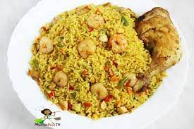

Fried-Rice Recipe

Description
Fried Rice is a very simple yet delicious recipe. This version relies on a ton of fresh vegetables,
Beef Liver, and a little bit of oil for crisping it up. You can always spice things up the way you
want, the main thin g is to enjoy your meal.
Ingredients
- 3 tbsp. sesame oil, divided
- 3 large eggs
- Kosher salt
- 2 carrots, diced
- 3 cloves garlic, minced
- 3 green onions, thinly sliced, white and green parts divided
- 4 c. cooked long grain rice (preferably leftover)
- 3/4 c. frozen peas
- 1 tbsp. peeled and minced ginger (from a 1" piece)
- 3 tbsp. low-sodium soy sauce
Steps
- Heat a large cast iron skillet over high heat until very hot, about 2 minutes. Add 1 tablespoon oil.
- Beat egg with 2 teaspoons water and a large pinch salt and add to skillet. Cook, stirring to form large
soft curds, about 30 seconds. Transfer to a plate.
- Return skillet to high heat and add 2 tablespoons oil, the carrots, and whites of the green onions.
Cook until lightly golden, about 2 minutes. Add garlic and ginger and cook, stirring, until fragrant,
1 minute.
- Add rice, peas, and cooked eggs to skillet. Pour in soy sauce and cook, stirring until heated through,
1 minute. Season with salt and pepper and stir in the remaining green onions.